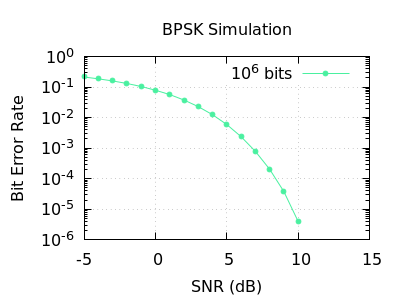

|
Link Simulator
|
A C++ simulation of a digital communications link implementing BPSK (Binary Phase Shift Keying) modulation. Generates random bit sequences, modulates them to IQ symbols, transmits through a simulated AWGN channel, demodulates, and computes Bit Error Rate (BER) across a sweep of SNR values. Output is a BER vs SNR curve written to CSV, suitable for plotting and link budget analysis.
σ = sqrt(1 / (2 * 10^(SNR_dB/10)))LinkSimulation<BPSK> uses BPSK as a compile-time policy, enforcing a static interface contract (encode, decode, BITS_PER_SYMBOL)static constexpr member for compile-time constant BITS_PER_SYMBOLBitGenerator, Channel, and LinkSimulation each own a single responsibilityChannel constructed once and reused across SNR sweep, rather than reinstantiated per pointBitGenerator reseeds from stored seed before each generate() call, ensuring identical bit sequences across all SNR valuesstd::filesystem for output directory creationconst auto& [snr, ber]) for readable pair iterationstd::pairnlohmann/json.hpp — no external dependencies, no build-time downloadargc/argv command line argument handling for config file pathparseConfig validates raw JSON input at the system boundary, constructors validate their own arguments independently@throws documented on all public interfaces, @pre on internal utility functions backed by assertstd::runtime_error for I/O failures, std::invalid_argument for parameter validation@tparam documents the ModScheme policy interface contract on LinkSimulation@code / @endcode usage examples in key docstringsEdit config.json to control the simulation:
| Field | Description |
|---|---|
modulation | Modulation scheme. Currently "BPSK" only |
num_bits | Bits simulated per SNR point. Higher = more accurate BER at low error rates |
snr_range_db | SNR sweep range and step size in dB |
noise_model | Noise model. Currently "AWGN" only |
seed | RNG seed for reproducibility. Omit for a random seed |
output_file | CSV output path. Directory is created if it does not exist |
The build commands can also be run using the provided shell script,
There is a Makefile in which build and clean are defined. The executable can be generated by running,
Executable is written to bin/linksim.
Use any plotting software which reads CSV files. A plot.gp file is provided for plotting with a headless version of gnuplot.
Requires gnuplot and gnuplot-nox:
Produces ber_curve.pdf with BER plotted on a logarithmic axis against SNR.
or
Running with the default config.json only with num_bits changed so that 1,000,000 bits are used per point returns the following CSV:
BER curve plotted using a similar plot.gp file,

BER falls steeply with increasing SNR — the characteristic waterfall curve of a digital communications link. At 0 dB SNR roughly 8% of bits are decoded incorrectly. By 10 dB this drops to near zero.
include/nlohmann/json.hpp) already includedThis project is written in the context of simulation and ground support software, where standard C++ features including exceptions, STL containers, and dynamic memory allocation are appropriate. It does not follow safety-critical coding standards such as JSF++ or MISRA C++, which apply to flight-certified and embedded systems.
static constexpr interface contractsstd::filesystem for portable directory and path operationsauto& [key, value])mutable member variables for logically-const methods with stateful RNGargc/argv command line argument handlingstd::ofstream with std::fixed and std::setprecision for formatted CSV output@tparam, @pre, @code / @endcode tags